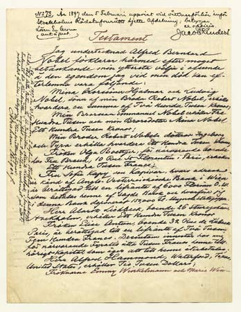

Sekira tahun 1860, Alfred mengadakan serangkaian eksperimen pribadi. Akhirnya dia mulai berhasil memproduksi nitrogliserin tanpa ada permasalahan yang berarti. Keberhasilannya ini merupakan keunggulan pertamanya atas Sobrero.
Alfred kemudian mencampurkan nitrogliserin dengan bubuk mesiu dan membakarnya dengan bantuan sumbu. Sang ayah yang melakukan percobaan serupa cukup geram. Dia menganggap, hal itu merupakan idenya. Alfred pun menjelaskan apa saja yang dilakukannya, sehingga kemarahan Immanuel pun mereda. Hasil karya Alfred Nobel akan cairan yang disebut dengan blasting oil ini pun tertuang dalam paten pada Oktober 1863, di usianya yang ke-30.
Setelah itu, bayang-bayang kesuksesan Alferd Nobel mulai terlihat secara bertahap. Pada musim semi dan panas berikutnya, dia kembali penelitian dan akhirnya mengetahui mekanisme produksi nitrogliserin yang lebih sederhana dan mengenalkan penggunaan detonator dalam peledakan. Kedua penemuannya ini dipatenkan pula akhirnya.
Meskipun tergolong melankolis, Alfred Nobel bukanlah orang yang lambat pulih dari kesedihan. Pada September 1864, pabrik Alfred di Stockholm meledak dan memakan korban adiknya, Emil Nobel. Satu bulan berikutnya, dia menyertakan perusahaannya dalam pasar saham.
Sukses besar pun diraihnya. Pabriknya pun semakin bertebaran di penjuru dunia. Dia membeli sebidang tanah di Hamburg, Jerman, dan mendirikan pabriknya di sana. Pabriknya di Amerika Serikat dibangun pada 1866 setelah melawan berbagai hambatan birokrasi dan praktik bisnis yang serupa.
Keberhasilan demi keberhasilan tidak menyurutkan perhatian Alfred pada bidang yang sangat digemarinya, yakni meneliti. Dia akhirnya mengetahui, nitrogliserin haruslah dapat diserap oleh material yang berpori sehingga memiliki bentuk yang sifatnya portable, dapat dibawa ke mana saja, dan aman.
Saat menetap di Jerman, dia akhirnya menemukan materi tersebut. Materi ini dikenal dengan nama Kieselguhr, yang merupakan pasir pengabsorb berbahan dasar silika yang berasal dari cangkang ganggang diatomae. Kieselguhr membuat nitrogliserin memiliki bentuk, karena mampu mengabsorb bahan kimia cair itu. Dengan demikian, campuran ini dapat dengan mudah diletakkan di sasaran peledakan dan dibawa ke mana saja tanpa khawatir akan terjadinya ledakan.
Dari sinilah dinamit berasal. Dinamit sendiri berasal dari kata Yunani dynamis, yang memiliki arti tenaga atau daya. Tahun 1867 juga merupakan masa keemasan bagi Alfred Nobel karena paten dinamitnya memperoleh persetujuan di berbagai negara seperti Swedia, Inggris, dan Amerika Serikat. Dinamit sendiri ditemukan pada saat mesin pengebor pneumatic dan intan digunakan untuk keperluan yang sama. Tidaklah mengherankan jika keterlibatan dinamit sangat mengurangi waktu, tenaga, dan biaya dalam projek-projek konstruksi.
Pada 1868 Alfred Nobel dan ayahnya memperoleh penghargaan Letterstedt Prize dari Royal Swedish Academy of Sciences. Penghargaan ini diberikan pada siapa saja yang menghasilkan penemuan yang berharga bagi umat manusia. Ide penghargaan Nobel berasal pula dari penghargaan yang diterima oleh Alfred Nobel di Swedia.